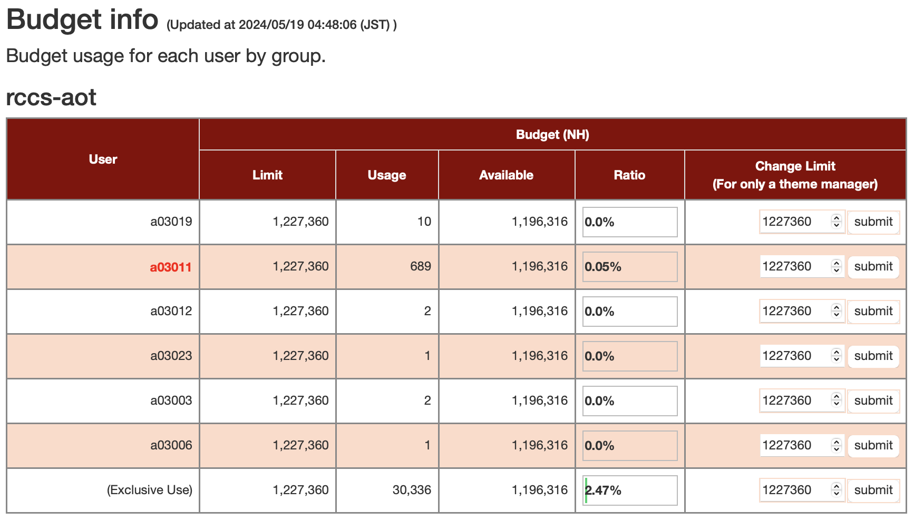
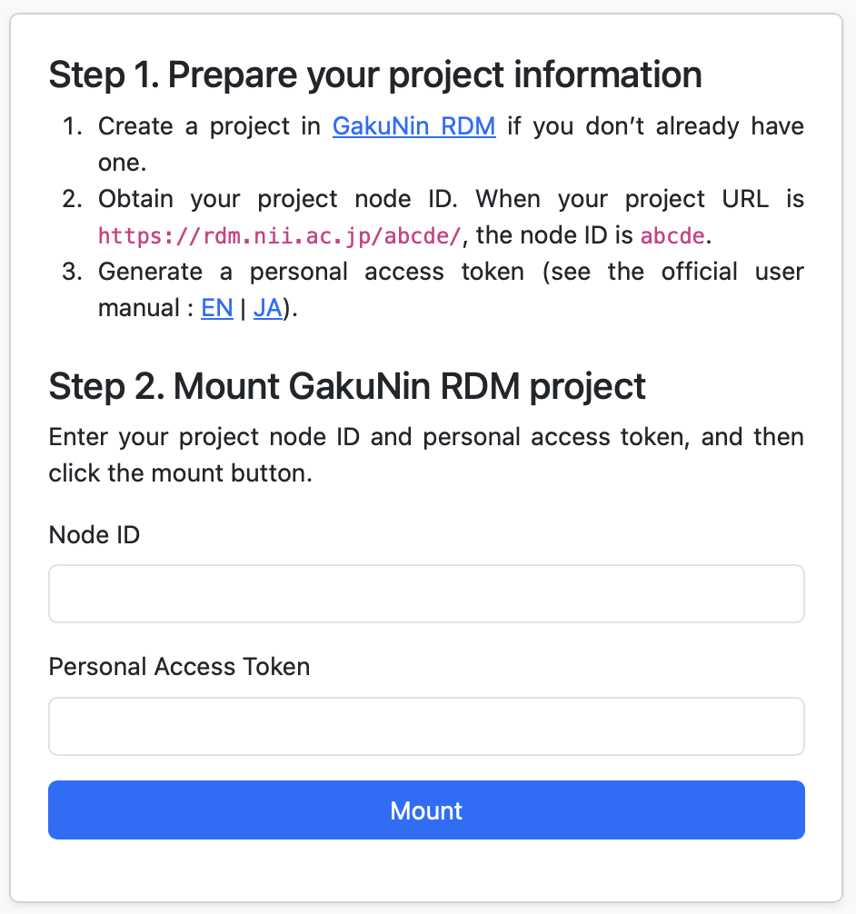

Open OnDemandの利用方法
はじめに
Open OnDemandは、Webブラウザから並列計算機システムを利用するためのWebポータルです。富岳のOpen OnDemandで提供しているアプリケーションは下記の通りにグループ分けしています。
- Batch Jobs：富岳の計算ノードに投入する実アプリケーション
- Interactive Apps：富岳やプリポスト環境で動作する対話的アプリケーション
- Passenger Apps：Open OnDemandがインストールされたサーバで動作するユーティリティ

上図はOpen OnDemandのダッシュボードです。最上部のナビゲーションバーから，各アプリを起動させることができます。 図中の数字の項目の意味は下記の通りです。
- 外部リンク
- 最新の富岳のインフォメーション
- 富岳とプリポスト環境のキューの待ち状況
- 富岳の運用スケジュール
- ディスクとバジェットの使用率
- 最近利用したアプリケーション（最大4つ）
- Passenger Apps
Batch Jobs
下記のアプリケーションが利用可能です。追加したいアプリケーションがある場合は富岳サポートサイトに連絡ください。
| Category | Application |
|---|---|
| Climate | SCALE |
| Computer Aided Engineering | FDS, FFVHC-ACE, FrontFlow (blue/X), FrontISTR, OpenFOAM (Foundation/OpenCFD) |
| Condensed Matter Physics | ALAMODE, AkaiKKR, HΦ mVMC, OpenMX, PHASE/0, Quantum Espresso, SALMON |
| Experimental Data Processing | KIERTÄÄ |
| Molecular Dynamics | GENESIS, GROMACS, LAMMPS, MODYLAS, PIMD |
| Quantum Chemistry | ABINIT-MP, Gaussian, NTChem, SMASH |
| Quantum Simulation | braket |
アイコンをクリックすると、計算リソースなどを入力するためのWebフォームが表示されます。入力項目はアプリケーション毎に異なります。入力後に「Submit」をクリックすると、富岳にジョブが投入されます。詳細はこちらを参照ください。
Interactive Apps
下記のアプリケーションが利用可能です。
| Category | Application |
|---|---|
| Development | Remote Desktop, JupyterLab, MATLAB, VSCode, RStudio, Terminal (ttyd) |
| Profiler | NVIDIA Visual Profiler, NVIDIA Nsight Compute, NVIDIA Nsight Systems, Vampir |
| Viewer | AVS/Express, C-Tools, GaussView, Gnuplot, GrADS, ImageJ, MOLDEN, OpenMX viewer, OVITO, Paraview, PyMOL, SALMON view, Smokeview, VESTA, VMD, VisIt, XCrySDen |
| Workflow | WHEEL |
Batch Jobsと同様にWebフォームに計算リソースなどを入力し、「Launch」をクリック後、計算ノード上でジョブが起動するとアプリケーションへのリンクが表示されます。そのリンクをクリックすると、該当のアプリケーションをWebブラウザから利用できます。

Passenger Apps
Active Jobs
ジョブの情報を閲覧できます。ジョブの削除も可能です。

Budget Info
グループ内の各ユーザのバジェット利用量を表示します。また、テーマ管理者は各ユーザのバジェットに上限値を設定できます。

Disk Info
グループ内の各ユーザのディスク利用量を表示します。

Home Directory
ファイルのアップロード・ダウンロード・削除・編集を行えます。アップロード・ダウンロード可能な最大サイズは10GBです。

rcloneを用いたクラウドストレージに対するファイル操作も可能です。Interactive AppsのRemote Desktopを起動し、ターミナルからrcloneもしくはrclone-browserを実行すると、rcloneの設定を行うことができます。設定後にOpen OnDemandの再起動を行い（ナビゲーションバーの「Help」->「Restart Web Server」をクリック）、Home Directoryを起動すると、設定されたクラウドストレージにアクセスできます。なお、富岳ヘルプデスクではrcloneの設定のサポートは行っておりませんのでご了承ください。
GakuNin RDM
国立情報学研究所が提供する研究データ管理基盤であるGakuNin RDMに対するファイル操作を行えます。
- Mount Path：富岳側のマウントパス（例：/home/rccs-aot/a00000/abc）
- RDM Node ID：GakuNin RDMのプロジェクトのURL（https://rdm.nii.ac.jp/xxx/）のxxxの箇所
- ROM Token：GakuNin RDMのパーソナルアクセストークン

「mount」をクリックすると、指定したGakuNin RDMのプロジェクトが富岳にマウントされます。
HPCI共用ストレージ
HPCI (High Performance Computing Infrastructure)が提供するHPCI共用ストレージに対するファイル操作を行えます。本アプリを利用するためには、JWT-SERVERからパスフレーズを事前に発行しておく必要があります。
- HPCI ID：JWT-SERVERでパスフレーズを生成したときに表示される「hpcixxxxxx」という文字列（xxxxxxは数字）
- Passphrase：パスフレーズ

「mount」をクリックすると、HPCI共用ストレージが富岳にマウントされます。
Shell Access
Webブラウザ上でコマンドラインインタフェースを用いた操作を行うことができます。

資料
補足
- Open OnDemandのテンポラル用のディレクトリは${HOME}/ondemandです。Open OnDemandを利用すると自動生成されます。削除しても問題ありませんが、履歴やInteractive Appsでユーザがインストールした拡張機能も削除されます。
- もし不具合が発生した場合、${HOME}/ondemandを削除する、もしくは上のバーの「Help」の「Restart Web Server」をクリック下さい。
- Internet Explorer 11はサポートしていません。
- Remote Desktopでコピーアンドペーストを利用したい場合は、Chromeブラウザをご利用ください。